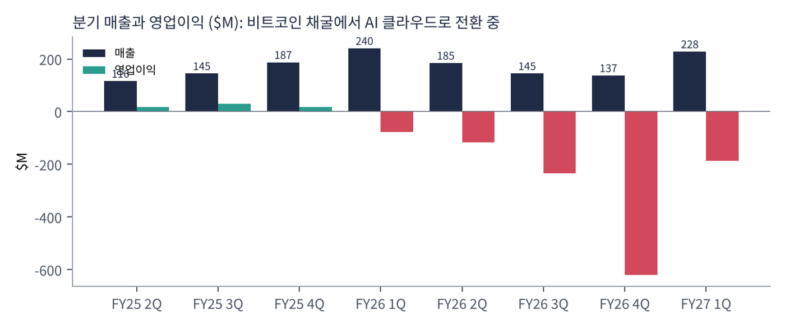
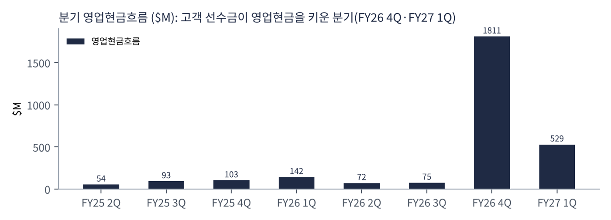
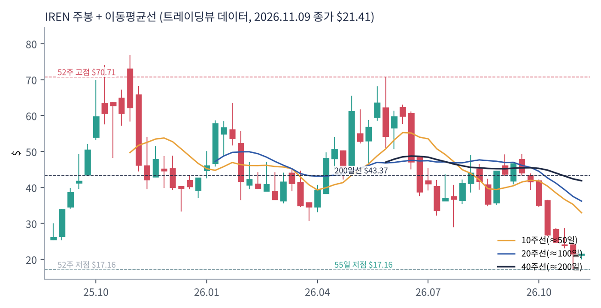
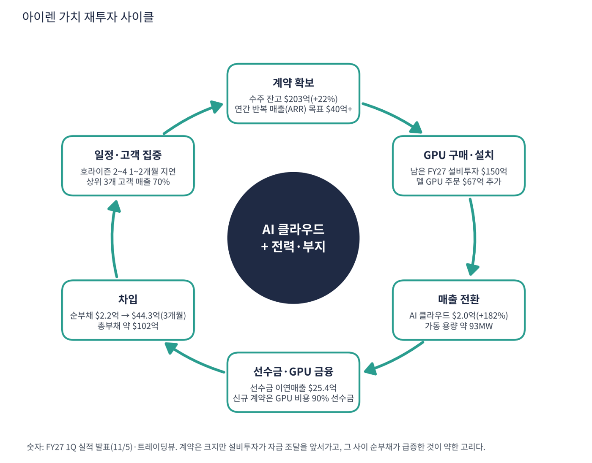

아이렌(IREN)은 호주에서 시작해 캐나다·미국 텍사스에 데이터센터와 전력 부지를 직접 가진 회사로, 비트코인 채굴 사업에서 AI 클라우드(GPU 임대)로 주력 사업을 옮기는 중이다. 마이크로소프트·엔비디아 등 15개 고객과 계약을 맺었고 GPU를 사 와 고객에게 시간 단위로 빌려주거나 용량을 임대한다. 땅·전력·데이터센터를 직접 소유한다는 점을 강점으로 내세운다. 11월 5일 FY27 1분기 실적 발표 이후 주가가 반등했다.
| 항목 | 내용 |
|---|---|
| 종목 | IREN Limited (IREN) · NASDAQ · AI 클라우드·비트코인 채굴 · 본사 호주 시드니/미국 뉴욕 |
| 시가총액 | 약 $87억 · PER 적자 · P/S 12.5배 · 11/9 종가 $21.41(-1.1%) |
| 최근 분기(FY27 1Q) | 매출 $2.28억(전 분기 +66%, 전년 -5%), AI 클라우드 $2.0억(+182%), 채굴 $0.28억, 조정 EBITDA $0.66억(29%), 순손실 -$2.63억, EPS -$0.62 |
| 계약·ARR | 수주 잔고 $203억(+22%), 가동 ARR $10억(두 배), ARR $40억+ 목표는 전액 계약·자금 확보 |
| 신규 계약 | 5년 계약 MW당 연 약 $2,200만에 고객이 GPU 비용 90% 선수금, 단기 계약 MW당 $4,000만, H100 재계약 가격 2배 |
| 자금 계획 | 남은 FY27 설비투자 $150억: 확보 $90억, 목표 조달 $60억 |
| 다음 실적 | FY27 2Q 실적: 2027년 2월 예정(확인 필요) |
| 직책 | 인물 | 역할·특징 |
|---|---|---|
| 공동 창업자·공동 CEO | 다니엘 로버츠 · 윌 로버츠 | 형제 창업자. 비트코인 채굴 자산을 AI 클라우드로 전환하는 전략을 이끎. 콜에서 계약·ARR 설명 |
| CFO | 앤서니 루이스 | 설비투자 $150억의 자금 조달 계획(선수금·GPU 금융)을 설명하는 재무 책임자 |
경영 스타일: '자산을 직접 소유해 속도로 이긴다'. 땅·전력·데이터센터를 직접 갖고 있어 GPU 설치 속도가 빠르다는 논리다. 한편 설비투자가 자금 확보보다 먼저 나가는 공격적 방식이라 순부채가 3개월 만에 $2.2억에서 $44.3억으로 늘었다. 이번 분기에는 호라이즌 1~4 가동 일정이 고객 요청(마이크로소프트 네트워크 설계 변경)으로 1~2개월 밀렸다.
엔비디아 블랙웰 등을 액체 냉각으로 높은 밀도에 설치하며, 호라이즌 1은 엔비디아 '이그젬플러' 인증을 받았다.
계약된 ARR 목표 $40억 이상을 실제 가동 매출로 바꾸고 이를 늘려 AI 클라우드 사업자가 되는 것이다.
| 분기 | 매출 | 영업이익 | 영업이익률 | 순이익 | 영업현금 | 참고 | 특이 사항 |
|---|---|---|---|---|---|---|---|
| FY25 2Q | $116M | $17.3M | 14.9% | -$21.9M | $54.0M | – | |
| FY25 3Q | $145M | $29.2M | 20.2% | -$16.1M | $93.0M | – | |
| FY25 4Q | $187M | $18.0M | 9.6% | $177M | $103M | – | |
| FY26 1Q | $240M | -$76.4M | -31.8% | $385M | $142M | – | 순이익 +$3.85억은 일회성(확인 필요) |
| FY26 2Q | $185M | -$116M | -63.0% | -$155M | $72.0M | – | |
| FY26 3Q | $145M | -$234M | -161.3% | -$248M | $75.0M | – | 전년 동기와 동일 값(확인 필요) |
| FY26 4Q | $137M | -$620M | -451.9% | -$684M | $1,811M | – | 영업현금 +$18.1억(고객 선수금) |
| FY27 1Q | $228M | -$186M | -81.6% | -$263M | $529M | – | AI 클라우드 $2.0억(+182%), 순손실 -$2.63억, EPS -$0.62 |


흐름 요약: 매출이 FY26 1Q $240M(채굴 중심)에서 FY26 4Q $137M으로 줄었다가 FY27 1Q $228M으로 반등했다. 바닥에서 올라온 이유는 AI 클라우드가 $71M(전 분기)에서 $200M으로 늘었기 때문이다. 영업이익은 FY25에는 흑자였지만 FY26부터 적자로 돌아섰고(감가상각·인건비 등) 최근 3분기 연속 적자이며 FY26 4Q 영업손실 -$620M은 일회성 요인 포함 가능성이 있어 확인이 필요하다. 영업현금이 FY26 4Q $1,811M, FY27 1Q $529M으로 커진 것은 고객 선수금 덕이며 이익이 아니다. 일부 분기 값(FY25 2Q, FY26 1Q·3Q, FY26 4Q)은 SEC 추출 과정에서 중복·오류 가능성이 있어 확인이 필요하다.
| 부문 | 내용 | FY27 1Q | 특징 |
|---|---|---|---|
| AI 클라우드 - 서비스 | GPU를 시간 단위로 빌려주는 서비스 | $1.35억 | 전 분기 $0.71억 |
| AI 클라우드 - 임대 | 마이크로소프트 호라이즌 1 용량 임대(회계상 리스) | $0.65억 | 전 분기 없음. 호라이즌 1을 마이크로소프트에 인도한 뒤 시작 |
| 비트코인 채굴 | 자체 데이터센터에서 채굴 | $0.28억 | 전년 $2.33억에서 급감. 전환 중 |
AI 클라우드 비중이 88%로 올라왔다. 상위 3개 고객이 매출의 28%·24%·18%(합 70%)를 차지해 집중도가 높다. 계약 잔고는 서비스 계약 $63.5억 + 임대 약 $139.6억(아직 가동되지 않은 용량 포함)이다. 가동 AI 클라우드 용량은 약 93MW다.
아이렌이 가려는 곳은 땅·전력·데이터센터를 직접 가진 독립 AI 클라우드 사업자다. 비트코인 채굴 사업의 전력 확보 경험을 AI 서버 임대로 옮겨 더 높은 단가와 장기 계약을 받는 것이다.
| 축 | 내용 |
|---|---|
| 계약 확대 | 마이크로소프트·엔비디아 외 13개 고객, 잔고 $203억 |
| 선수금 구조 | 신규 5년 계약은 GPU 비용 90% 선수금으로 자금 부담 완화 |
| 전력 부지 | 텍사스 스위트워터 2GW 등 대형 부지 확보 |
| 가격 상승 | 3년·5년 계약 단가 직전 분기보다 11~12% 상승 |

| 이동평균 | 값 | 종가 대비 | 해석 |
|---|---|---|---|
| 5일선 | $21.45 | -0.2% | |
| 20일선 | $25.83 | -17.1% | |
| 50일선 | $35.59 | -39.8% | |
| 100일선 | $38.60 | -44.5% | |
| 200일선 | $43.37 | -50.6% | $43.4, 거의 2배 위 |
11/9 종가 $21.41는 52주 고점 $70.71의 30% 수준, 52주 저점 $17.16 대비 +25%다. 1·3·6·12개월 수익률은 -39%·-46%·-61%·-68%. 연중 고점 $70.7에서 약 -70% 하락해 52주 저점($17.2) 근처에서 반등한 상태다. 한 달 전 $35.2에서 -39%이며 실적 발표(11/5) 직후 급등 보도가 있었지만 주가는 모든 중장기선 아래다.
트레이딩뷰 차트에서 사용자가 직접 그린 작도는 포함하지 않았고, 이동평균·돈키언 등 지표는 일봉 데이터로 직접 계산했다.
| 규칙 | 기준 | 현재 값 | 신호 |
|---|---|---|---|
| 장기 추세 필터 | 종가 vs 200일선 | $21.41 < $43.37 | 매도 |
| 중장기 교차 | 50일선 vs 200일선 | $35.59 < $43.37 | 매도 |
| 단기 교차 | 20일선 vs 50일선 | $25.83 < $35.59 | 매도 |
| 돈키언 채널 | 55일 고가 $49.37 / 저가 $17.16 | 중간값 $33.26 아래 | 매도 |
| 1개월 모멘텀 | 21거래일 수익률 | -39.2% (기준 $35.19) | 매도 |
| 3개월 모멘텀 | 63거래일 수익률 | -46.1% (기준 $39.75) | 매도 |
| 6개월 모멘텀 | 126거래일 수익률 | -61.2% (기준 $55.15) | 매도 |
| 12개월 모멘텀 | 252거래일 수익률 | -68.0% (기준 $66.96) | 매도 |
| 종합 (8개 평균) | -1.00 | 강한 매도 |
해석: 점수 -1.00(강한 매도)로 8개 신호가 모두 매도다. 5일선($21.4)은 가격과 같은 수준이며 20일선 $25.8·50일선 $35.6 아래다. 14일 ATR $2.89 (13.5%).
| 가격 | 무엇이 바뀌나 | 의미 |
|---|---|---|
| $43.37 | 200일선 회복 시 장기 신호 매수 전환 | 점수 ±0.25 |
| $33.26 | 돈키언 중간값(55일 고·저점 평균) | 채널 신호 전환선 |
| $25.83 | 20일선 회복 시 단기 흐름 개선 | 단기 추세 신호 |
| $17.16 | 55일 저점 이탈 시 하락 추세 확정 | 손절 판단 기준 |
| 구분 | 가격 | 근거 |
|---|---|---|
| 저항 2 | $25.83 | 20일선 |
| 저항 1 | $21.45 | 5일선 |
| 지지 1 | $17.16 | 55일 저점 |
| 지지 2 | $17.16 | 52주 저점 |
PEG 산출 불가이고 CTA 완전 매도, 부채 급증 종목이라 소규모 투기 접근만 허용한다. $18~21.5에서 계획 금액의 20%씩 두 번(총 40%)만 매수하고 20일선 $25.8 돌파 시 추가를 검토한다(평균 약 $19.8, 손절 $16.5 기준 손익비 1:1.8~1:4.1). 1차 $25.8(20일선), 2차 $33.3(돈키언 중간값)에서 익절한다. 55일 저점 $17.2 이탈 후 종가 $16.5 이하면 손절한다. 확인 신호는 호라이즌 2~4 가동 시점, $60억 조달 완료, ARR $20억 도달이다. 가격대는 내 시나리오이며 매매 권유가 아니다.
| 악재 요인 | 내용 | 강도 |
|---|---|---|
| 자금 조달·부채 | 미확보 $60억, 순부채 3개월 만에 $2.2억 → $44.3억. 시장이 막히면 일정·주가에 직격 | 높음 |
| 일정 지연 | 호라이즌 2~4 1~2개월 지연(고객 요청·공급사). 4호는 2027년 1분기 지연 위험 지적 보도 | 높음 |
| 고객 집중 | 상위 3개 고객 매출 70%, 마이크로소프트 계약 조건(지연 유예 조항 등) | 중간 |
| GPU 수명·가격 | 블랙웰 액냉 랙 5년 경제 수명이 검증되지 않음 | 중간 |
| 데이터 한계 | SEC 일부 분기 값 이상치, 영업손실 FY26 4Q -$620M 확인 필요 | 참고 |
| 티커 | 회사 | 시가총액 | PER(TTM) | PEG | P/S | EPS 성장(YoY) |
|---|---|---|---|---|---|---|
| IREN | 아이렌 | $9B | 적자 | – | 12.49배 | -290% |
| NBIS | 네비우스 | $38B | 적자 | – | 26.79배 | – |
| CRWV | 코어위브 | $27B | 적자 | – | 3.37배 | – |
| MSTR | 스트래티지 | $53B | 적자 | – | 111.50배 | -383% |
| ASTS | AST스페이스모바일 | $14B | 적자 | – | 83.90배 | – |
| RKLB | 로켓랩 | $35B | 적자 | – | 43.40배 | +39% |
코어위브·네비우스는 같은 AI 인프라 업종이라 이번 표에 넣었으며 PER·PEG는 모두 산출되지 않는다. 비트코인 채굴 직접 경쟁사(마라·라이엇 등)는 이번 수집에서 데이터를 확보하지 못했다.
비교 결론: 아이렌의 P/S 12.5배는 네비우스(26.8)·코어위브(3.4) 사이다. 모두 PER이 없어 매출·수주잔고로 값이 매겨지는 구간이다. 수주 잔고 대비 시총은 0.43배로 낮지만 그 잔고를 현금으로 바꿀 자금과 일정이 검증되지 않았다는 것이 핵심이다.
아이렌은 적자 기업이다. 이 보고서의 핵심은 '자금이 설비투자를 감당할 수 있나'다. 트레이딩뷰 최근 분기 현금 $57.3억, 총부채 $102.2억(순부채 $44.9억), 회사 발표 자금 계획으로 점검했다.
| 항목 | 금액 | 출처 | 해석 |
|---|---|---|---|
| 남은 FY27 설비투자 계획 | $150억 | 회사 발표 | 한 해 안에 쓸 돈 |
| 확보된 자금 (현금 + 약정 GPU 금융 + 선수금) | $90억 | 회사 발표 | 현금 $57.3억 포함 |
| 미확보 (목표 조달) | $60억 | 회사 발표 | 시장 상황에 따라 조달 필요 |
| FY27 1Q 잉여현금흐름 | -$43.6억 | 제3자 집계(finsee) | 한 분기에 현금의 76% 소모 |
| TTM 잉여현금흐름 | -$64.9억 | 트레이딩뷰 | 순손실 -$13.5억의 5배 |
| 가정 | 분기 현금 소모 | 현금 $57.3억 기준 | 의미 |
|---|---|---|---|
| 최근 분기 속도 유지 | -$43.6억 | 약 1.3분기 | 조달 없이는 한 분기 반 |
| 회사 계획대로 $90억 확보분 사용 | -$50억 안팎(FY27 잔여 3분기) | 확보분 내에서 가능 | $60억은 별도 조달 필요 |
| 선수금 비율 90% 계약만 신규(가정) | 대폭 감소 | — | 신규 계약 GPU 비용을 고객이 부담 |
분기 소모는 제3자 집계(finsee)의 FCF를 사용했으며 회사 발표 현금흐름표와 차이가 있을 수 있다. 가정별 런웨이 해석은 내 추정이다.
| 기준 | 매출 | P/S | 비고 |
|---|---|---|---|
| 트레이딩뷰 표시값 | – | 12.5배 | — |
| 최근 4분기(SEC) | $6.95억 | 12.5배 | 시총 $87억 ÷ $6.95억 |
| 가동 ARR 기준 | $10억 | 8.7배 | 시총 ÷ 가동 ARR |
| ARR 목표 $40억 기준 | $40억 | 2.2배 | 목표 달성 시(전액 가동 시점 미정) |
| 수주 잔고 대비 | $203억 | 0.43배 | 시총 ÷ 잔고. 내 지표 |
해석: 가동 중인 매출 기준으로는 비싸고, 계약된 미래 매출 기준으로는 싸다. 가격이 정당화되는지는 '계약 → 실제 가동 → 현금 수취'의 속도에 달려 있다. 호라이즌 2~4 가동이 1~2개월 밀리면 가동 ARR이 늘어나는 시점도 밀린다.
| 지표 | 값 | 판정 |
|---|---|---|
| EBITDA (TTM, 트레이딩뷰) | -$0.25억 | 적자 |
| 조정 EBITDA (FY27 1Q) | $0.66억 (마진 29%) | 회사 정의(전 분기 14%) |
| AI 클라우드 부문 매출총이익률 | 86% | 감가상각·현장 비용 전, 회사 정의 |
| 순부채 | $44.9억 (트레이딩뷰) / $44.3억 (제3자) | 6월 $2.2억에서 급증 |
| EV (시총 + 순부채) | 약 $132억 | 내 계산 |
| 방식 | PER | EPS 성장률 | PEG | 판정 |
|---|---|---|---|---|
| 트레이딩뷰 | 적자 | -289.8% | – | 산출 불가 |
| 흑자 전환 시점 | 미정 | – | – | 회사 제시 없음 |
판정: PEG 산출 불가. EPS가 -$0.62(예상 -$0.49)로 적자이고 TTM EPS 성장률은 -290%다. 감가상각과 이자가 늘어나는 구간이라 조정 EBITDA 마진(29%)이 GAAP 흑자로 이어지려면 가동 용량이 크게 늘어야 한다. 회사가 말한 GPU 회수 기간 약 18개월(이전 약 2년)이 맞다면 계약 GPU의 현금 창출력은 개선되고 있다.

아이렌 사이클은 계약 → GPU 구매 → 가동 → 매출 → 재투자인데, 앞단에서 돈이 먼저 나가는 구조다. 최근 계약은 선수금 90%로 개선돼 이 간극이 줄어들 전망이다.
| 고리 | 현재 숫자 | 고리 강도 | 약해지는 신호 |
|---|---|---|---|
| ① 계약 확보 | 수주 잔고 $203억(+22%), ARR 목표 $40억+ 전액 계약 | 강함 | 계약 취소·고객 신용 악화 |
| ② GPU 구매·설치 | 남은 FY27 설비투자 $150억 | 과속 | 공급 지연 |
| ③ 매출 전환 | AI 클라우드 $2.0억(+182%), 가동 ARR $10억 | 초기 | 호라이즌 2~4 추가 지연 |
| ④ 선수금·금융 | 신규 계약 선수금 90%, 확보 $90억 | 개선 | $60억 조달 실패 |
| ⑤ 부채 | 순부채 $2.2억 → $44.3억(3개월) | 약함 | 금리 상승·차환 부담 |
| ⑥ 일정·고객 | 1~2개월 지연, 상위 3개 고객 70% | 주의 | 핵심 고객 계약 변경 |
이 사이클의 구조: 수요(①)와 선수금 구조(④)는 개선 중이다. 약한 고리는 순부채와 일정(⑤·⑥)이다.